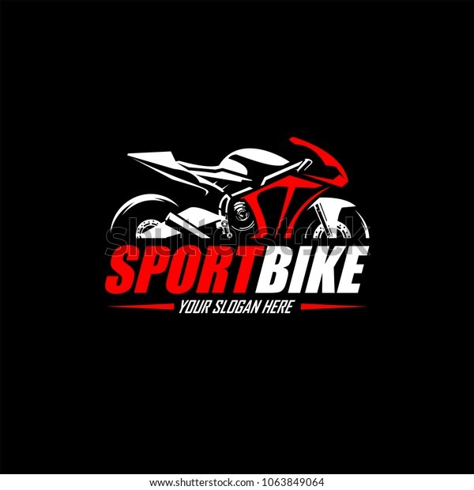

menü
iletişim
MOTORSİKLET TÜRLERİ
1-yonig uzun yol motorsikleti
bu motorsiklet türü uzun yok için ypılmıştı Bu motosiklet asfalt ve gerektiğinde asfaltın ve yolun hiç olmadığı
ortamlarda kullanılmak üzere yapılmıştır. Kelime anlamı dayanıklılıktır.
Bu klasmanın bir çok alt klasmanı var,
2. Enduro - Arazi ve Asfalt Motosikleti
Bu motosiklet asfalt ve gerektiğinde asfaltın ve yolun hiç olmadığı
ortamlarda kullanılmak üzere yapılmıştır. Kelime anlamı dayanıklılıktır.
Bu klasmanın bir çok alt klasmanı var, ancak temel olarak bu
3. Cruiser - Amerikan Uzun Yol Motosikleti
Bu motosiklet türü Amerikada ortaya çıkmış ve oradan tüm dünyaya
yayılmıştır. Oturuş şekli aşağıda görüldüğü gibi dizler belli bir açıda ileriye doğru
kırılır, ayaklar tam olarak el hizasında ve ileride
4. Racing - Yarış Motosikleti
Bu motosiklet türü aslında pist ve hız yarışları için geliştirilmiş
ama daha sonra ehlileştirilmiş versiyonları tüketici kullanımına sunulmuştur.
Oturuş pozisyonu en rahatsız olan motordur. Bütün vücut ileriye doğru
5. Street - Cadde Motosikleti
Bu motosikletler tamamen asfalt ve şehiriçi kullanımı için geliştirilmiştir.
Oturuş pozisyonu olarak yarış motoruna yakın ama biraz daha diktir. Kollar daha
dik olmadan ötürü çok fazla ağırlık çekmemekte ve
6. Commuter - Ulaşım Motosikleti
Genel amacı şehir içinde yüksek manevra kabiliyetli, düşük hızlı, iki nokta
arasında en kolay ulaşım yolu olarak kullanılmaktır. Boyutları ve silindir hacimleri
epey küçüktür, yakıt tüketimleri de bu sebepten
7. Scooter - Küçük Tekerlekli Ulaşım Motosikleti
Genel amacı şehir içinde yüksek manevra kabiliyetli, düşük hızlı, iki nokta
arasında en kolay ulaşım yolu olarak kullanılmaktır, dolayısıyla kullanım mantığı commuter
motorlar ile aynıdır. Oturuş şekli chooper